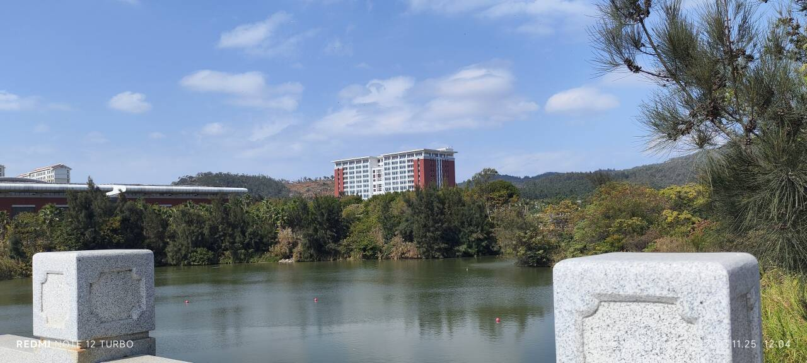

厦大一日游（机器人大赛）
原文发表日期 2023-11-25
朝花夕拾，感悟颇深，故迁移到新博客网址
11.25早晨六点，早早地起床，出了校门，坐了很长时间的地铁，来到了福州南站
看样子学长们昨天晚上调了一个通宵的车···
一个多小时后到达厦门北站，然后乘坐地铁到达岛内，又然后转乘到翔安区~~
见证了一个繁华到清净的过程
早听闻翔安校区周围都是荒地，果真如此；进入校园之后，感觉校内空间也很大
道路很宽，路上人也不多（即使是吃饭时间）；这样宽阔的路上，行车行人两不误
很奇怪的是，厦大翔安的面积远大于师大旗山，但目测其电动车比例很小，与师大大相径庭。晚上骑上共享单车时我得到了答案——在厦大骑车和在师大完全是不同的感觉，可谓冯虚御风，那叫一个爽；骑起来了，几乎不需要再蹬就可以走得很远很远。共享单车的故障率也远小于师大，这下子有共享电动车也不是很需要了
因此，在自然选择下，可以长距离骑的山地车更适用于没有减速带的厦大；交通相对堵塞的师大更适合电动车来进行频繁的零始加速
据目测，厦大跟师大的饭菜大致差不多，不过价格更便宜；米饭全部免费（因为有补贴），包装费便宜很多（呜呜呜不想回师大了）
翔安校区的建筑看起来很新很好看，毕竟是新的建筑，即使是宿舍楼也很有艺术气息；很有酒吧舞的感觉，属于是名副其实了
关于比赛
- 准备比赛需要携带的基本物品（电控组）
ps.下次需要再加上魔术贴
- 赛前硬件出问题可能是常态，需要稳住心态，才有可能抢救
赛前遥控器突然故障，硬件组的学长紧急抢修得以挽救；测试结束后，pitch轴控制出现离线问题，学长进行分析，得到结论：是新的线使pitch轴的线出现接触不良
赛前不要改走线，否则容易出大问题 - 需要多和其他成员沟通，谋得更好的配合
电控视觉硬件等组合作完成工作，每个人熟悉自己领域的工作并了解其他领域的工作，可以使调试效率大大提升 - 比赛周途劳顿是常态，需要习惯
比赛嘛，虽然不是土木，但是总是要接触硬件，不就得跑来跑去的嘛——也是比较值得的

感悟
在RM上，师大和厦大差距很大
一方面在资金和支持，这导致在资源上出现缺陷，师大只有一间实验室（和一间自习室），合在一起也远没有厦大的一间实验室面积大（而厦大有整整一个楼层的实验室，六间！），也因此师大没有环形高地等试验场地；
另一方面在于层次上，就新生而论：厦大的新生已经可以做各式各样的机器人（包括但不限于带有发射机构的机器人），与此同时师大的新生却处于在循迹小车的层次，各种通信协议也需要自行学习（这一点利弊难辨），格局差距不小；就氛围而论，师大不及周边很多学校，协会人数过少，如果条件允许（然而显而易见，也许由于物质基础的限制，条件是不允许的）可以向首都师范大学学习；
归其原因，还是因为穷，没有场地也没有资金
在层层限制下，不能想太远，才有机会翻盘在建设上，师大和厦大差距很大
同样是人文学校，同样是不注重理工科，为什么厦大机器人协会这么富（哭）
理工科可以算得上是一种趋势，所以各个学校都在努力向理工科砸钱，这样子，师大相对厦大的距离应该会是越来越远在学生素质上，师大和厦大差距很大
让我很为赞叹的是，开会期间，有几个厦大学生，一直在那里研究和学习
对于大学生而言，保持专注状态已经很为难得了，除非热爱，再加上有条不紊按部就班的规划能力
人外有人山外有山，对于个人能力，及有待提升需要多看开源，多交流学习以开阔眼界
看了集美成毅的车，他们的pid十分丝滑，车也显得十分轻。经过交流和观察得知，他们的部分结构设计是借鉴的开源，使用的材料也是相对轻便的玻纤，没有使用超级电容，很稳，最终以三十多秒零碰撞的成绩赢下了比赛。这应该是一个强基固本很好的例子，善于利用并学习，进而选择正确的决策才能换来成功看着好，不一定真的好
赛前，嘉庚学院的某队队长向领导展示全向轮的小车，其灵活性能令领导赞叹不已；上场后却频频“碰壁”（物理）。不禁令人沉思——再强大的设计，不经过赛场的试炼，它可以算作是强大吗？
ATTENDATION
厦门大学学习氛围和人文主义浓厚，但是和同层次院校相比，理工科水平不足
有学长说，厦门大学的理工科不如福州大学；窃以为RoboMaster比赛需要大量的经济支持来支撑起来，厦门大学作为酒吧舞固然有更多的物质支持，而硬件比拼不过，并不代表技术会有欠缺；在恶劣的环境下即使与在相对优越的环境下的他们能打平手，某种意义上也算是大获全胜了——初心高于胜负，成长胜于输赢！
润去学高数了，再不学就挂科了
.gif)
.gif)
.gif)
.gif)
.gif)
.gif)
.gif)
.gif)
.gif)